Structural Steel Fabrication
Precision structural steel works including beams, columns,
trusses, bracings, and specialized components for industrial,
commercial, and residential projects.
General Structural Steel Works
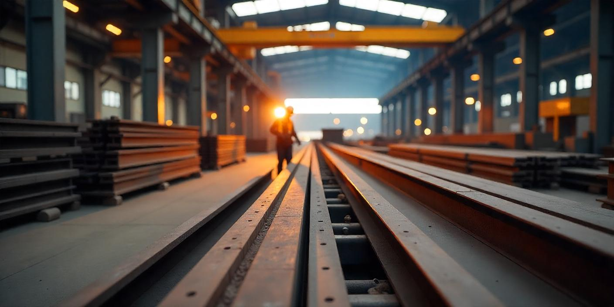
Including beams, columns, trusses, and bracings
Lifting Beams & Spreaders
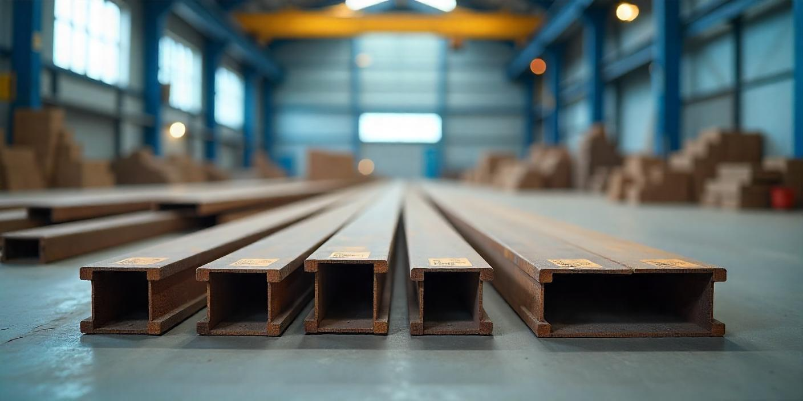
Precision-built and load-tested
Steel Towers & Gantries
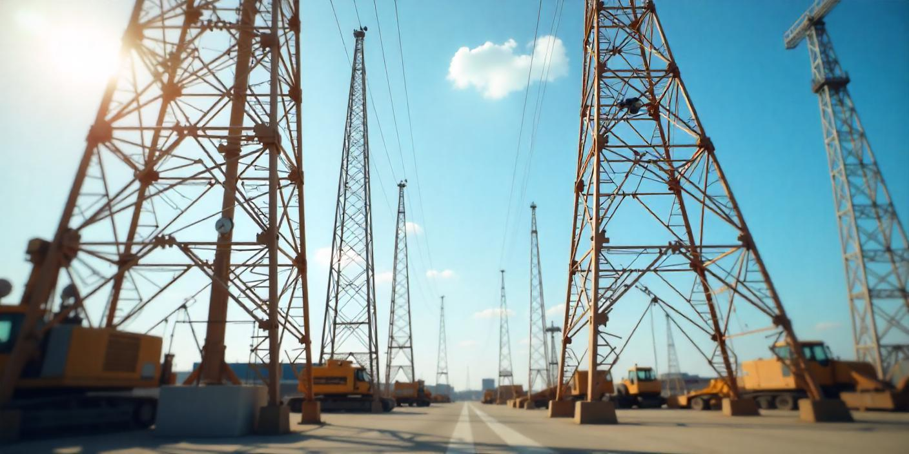
For lighting, telecom, or support structures
Mezzanine Floors
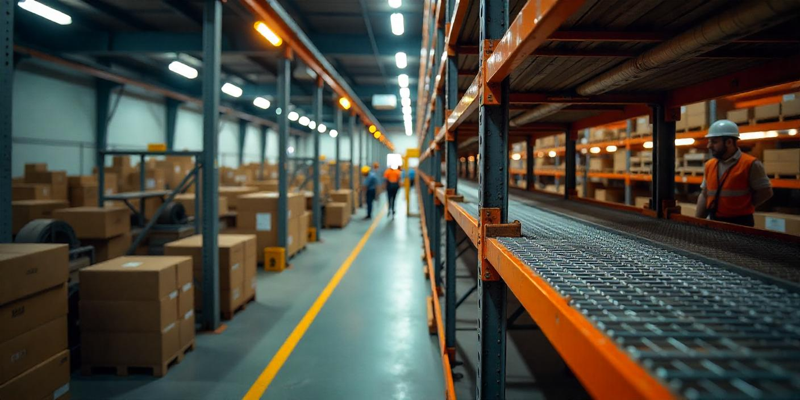
Engineered for heavy-duty warehouse or factory use
Shoring Towers
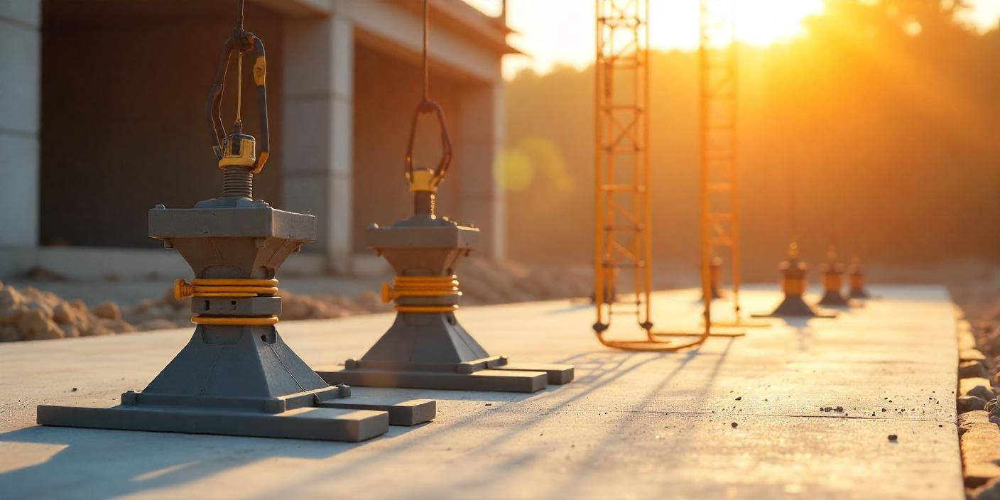
Temporary structures for load-bearing support during
construction
Base Frames & Equipment Skids
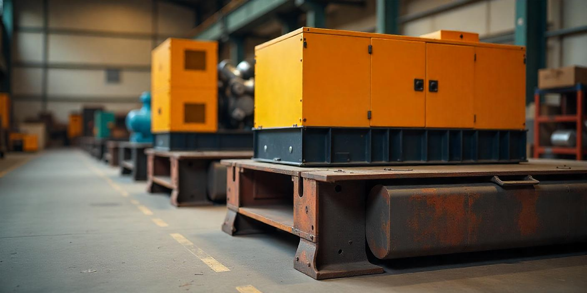
For generators, compressors, and other heavy equipment.
-
General Structural Steel Works involve the fabrication and
assembly of key structural elements essential for the stability and strength of buildings,
bridges, industrial facilities, and other infrastructure projects. This typically includes
manufacturing and installing beams, which support horizontal loads; columns, which bear
vertical loads and transfer them to foundations; trusses, which are triangular frameworks
that provide rigidity and distribute weight efficiently; and bracings, which reinforce
structures against lateral forces such as wind or seismic activity. Together, these
components form the backbone of safe, durable, and robust steel frameworks used in a wide
range of construction applications.
-
Steel Towers & Gantries are engineered to provide reliable support for
lighting systems, telecommunication equipment, and other critical infrastructure. These robust
steel structures are built to withstand environmental stress and heavy loads. Steel towers
often rise high to maximize coverage and visibility, whereas gantries span horizontally to
support overhead equipment or traffic signage, ensuring safety and functionality in industrial,
commercial, and public spaces.
-
Mezzanine Floors are custom-designed and engineered for heavy-duty use in
warehouses, factories, and industrial facilities, creating additional usable space without
costly building extensions. Made from durable steel, these intermediate floors can support
storage racks, equipment, or office space, significantly increasing operational capacity and
improving workflow efficiency.
-
Shoring Towers are temporary yet crucial load-bearing structures used during
construction or renovation projects. They support concrete slabs, beams, or entire structural
sections until permanent supports are in place and the concrete has set. Engineered for
stability and safety, they help prevent collapse or shifting, ensuring a secure working
environment on site.
-
Base Frames & Equipment Skids are robust steel frames fabricated to support
and transport heavy machinery like generators, compressors, and pumps. Designed to distribute
weight evenly and reduce vibration, these structures simplify installation and relocation of
equipment, protect it from damage, and enhance operational stability in demanding industrial
environments.
Fire Protection & Safety Metal Works
Design and fabrication of fire protection systems, safety
barriers, and other safety metal works tailored to meet
regulatory standards and client requirements.
Fire-Rated Steel Doors
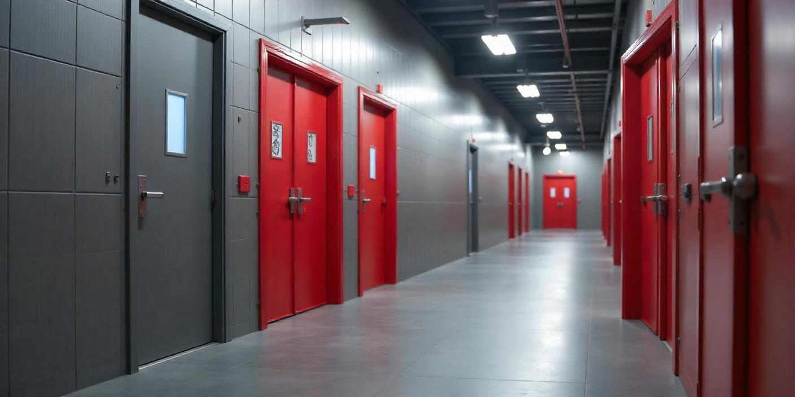
Single/double-leaf, panic hardware, and vision panel options
Fire Hose Reel Cabinets
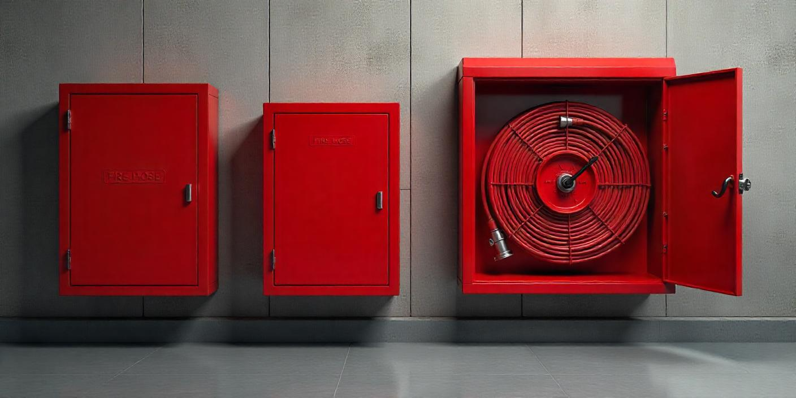
Wall-mounted or recessed, with corrosion-resistant finishes.
Emergency Exit Doors
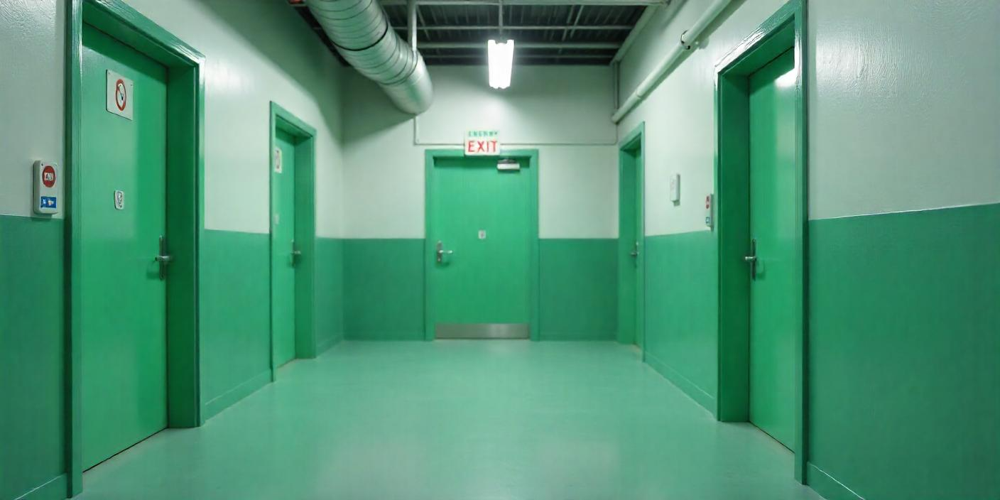
Integrated panic bars and durable steel construction.
Protective Guards & Bollards
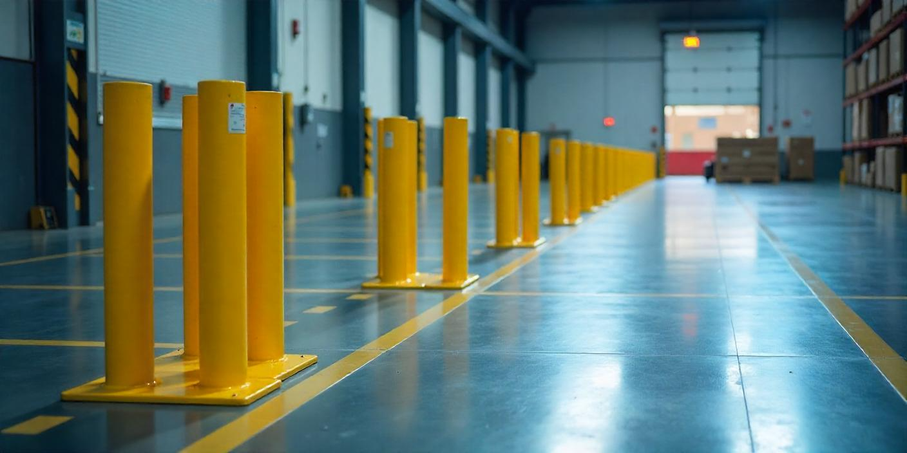
For industrial and high-traffic safety
-
Fire-Rated Steel Doors are expertly engineered in single or double-leaf designs, complete with panic hardware
and optional vision panels. Built to meet strict safety standards, these doors provide critical fire resistance while ensuring
quick and secure evacuation in emergencies.
-
Fire Hose Reel Cabinets are available in wall-mounted or recessed configurations and finished
with corrosion-resistant coatings. Designed to protect fire safety equipment and keep it easily accessible,
these cabinets blend functionality with long-lasting durability.
-
Emergency Exit Doors feature integrated panic bars and sturdy steel construction, ensuring safe,
rapid egress during critical situations. Their robust design meets regulatory requirements and withstands frequent use in high-traffic areas.
-
Protective Guards & Bollards offer essential safety solutions for industrial facilities,
commercial buildings, and public spaces. These durable steel structures help protect people, machinery, and property from
impact and guide safe movement through high-traffic zones.
Access Platforms & Handling Systems
Custom-built access platforms, ladders, and material handling
systems ensuring safety and efficiency in industrial
environments.
Man Baskets & Cargo Baskets
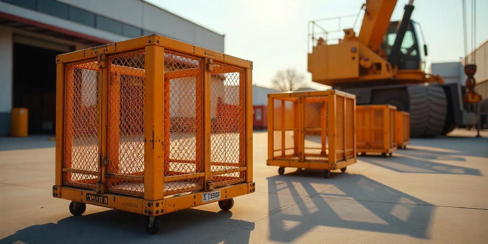
Safe lifting of personnel and materials.
Offshore Transport Baskets
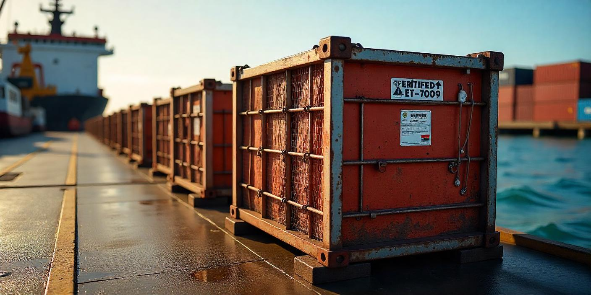
Certified and rugged, for marine & offshore use
Walkways, Handrails
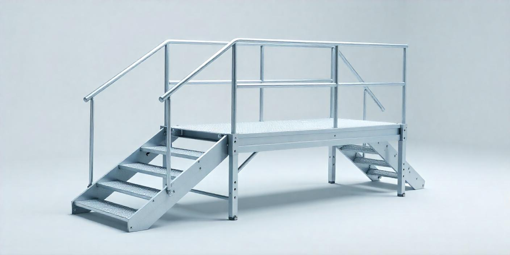
For maintenance, safety, and structural access.
Handrails & Ladders
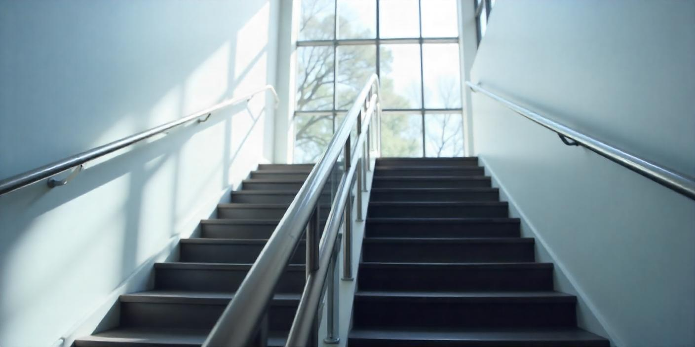
For maintenance, safety, and structural access.
-
Man Baskets & Cargo Baskets are engineered for the secure and efficient lifting
of personnel and materials in industrial environments. Built to meet stringent safety
standards, they ensure stability and protection during elevated operations. Their robust
construction and certified designs make them ideal for use in construction
sites, offshore platforms, and maintenance tasks. With customizable options, these baskets
can be tailored to fit specific project requirements and operational needs.
-
Offshore Transport Baskets are specially designed to safely transfer equipment and materials
across marine and offshore facilities. Built with heavy-duty, corrosion-resistant materials,
they withstand harsh sea conditions and demanding environments. Each basket is fully certified to
meet international offshore safety and handling standards. Their durable, rugged construction ensures
reliable performance during repeated lifting and transport operations.
-
Walkways, Handrails & Ladders are essential components that enhance safety and accessibility across industrial
and commercial facilities. Designed for durability and compliance with safety standards, they provide secure routes
for maintenance and operational tasks. Precision fabrication ensures
these structures integrate seamlessly into existing frameworks. Their robust construction helps protect personnel
hile supporting efficient movement around complex sites.
Waste Management & Utility Fabrication
Fabrication of waste bins, utility enclosures, and other
infrastructure solutions to support facility operations and
environmental standards.
Garbage Skips, Bins, and Chutes
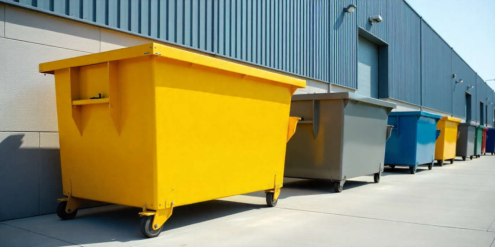
Heavy-duty containers for industrial waste
Chimney Ducts & Exhausts
Fabricated ducts for ventilation and exhaust.
Steel Enclosures & Cabinets
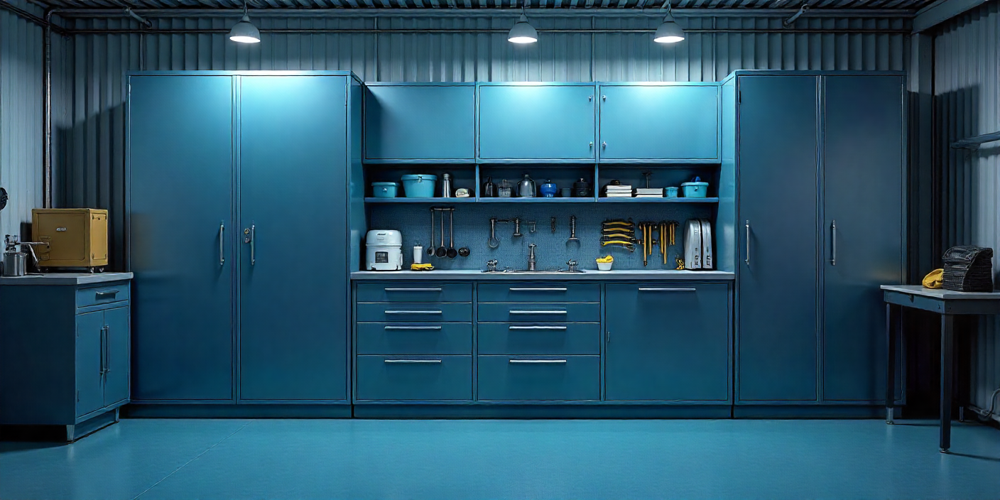
Durable storage units for tools, hoses, and equipment
Steel Enclosures & Cabinets
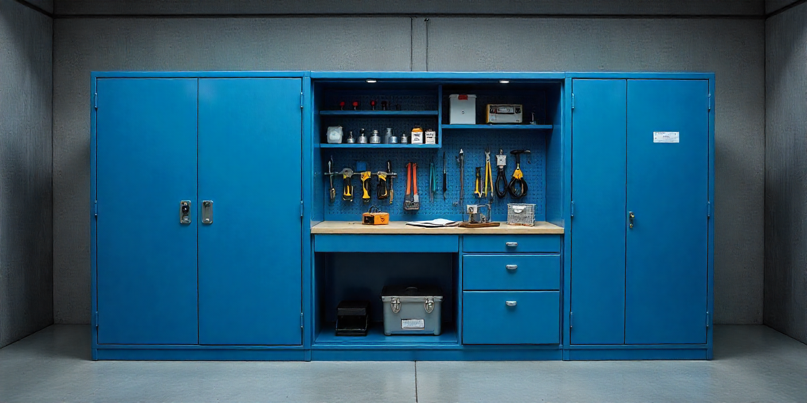
storage units for tools, hoses, and equipment
-
Garbage Skips, Bins, and Chutes are designed to handle large volumes of industrial and commercial waste efficiently.
Manufactured from heavy-duty, corrosion-resistant materials, they withstand tough working conditions and frequent use. Their practical
designs support easy loading, unloading, and transportation of waste. These solutions help maintain cleaner, safer worksites
by streamlining waste collection and disposal.
-
Chimney Ducts & Exhausts are custom-fabricated to manage ventilation and expel fumes safely from industrial processes.
Built with high-quality materials, they ensure durability and resistance to heat and corrosion. Precision
engineering supports efficient airflow, improving air quality and operational safety. These systems are essential
for maintaining compliant and healthy working environments.
-
Steel Enclosures & Cabinets provide secure and organized storage for tools, hoses, and sensitive equipment.
Crafted from robust, corrosion-resistant steel, they are built to withstand harsh industrial and outdoor environments.
Thoughtfully designed compartments and locking systems
help protect valuable assets from damage and unauthorized access. These durable units enhance operational efficiency
by keeping essential items safe and easily accessible.
Stainless Steel & Metal Fabrication
Comprehensive stainless steel works including decorative
items, structural supports, claddings, and other specialized
metal fabrication.
Stainless Steel Handrails & Railings
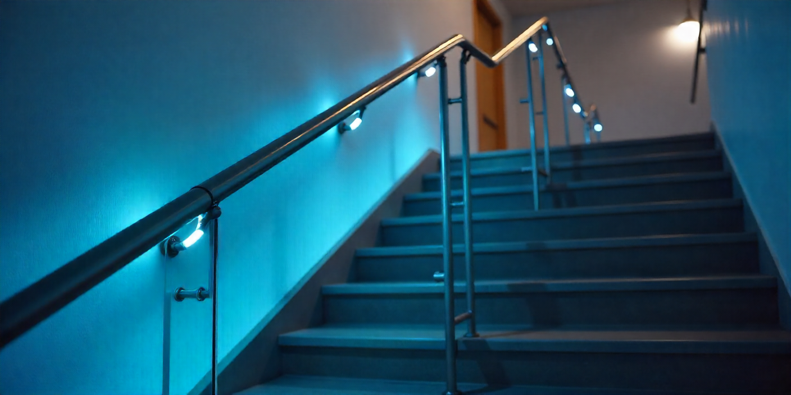
Durable and aesthetic for all settings.
Metal Gates, Grills, and Covers
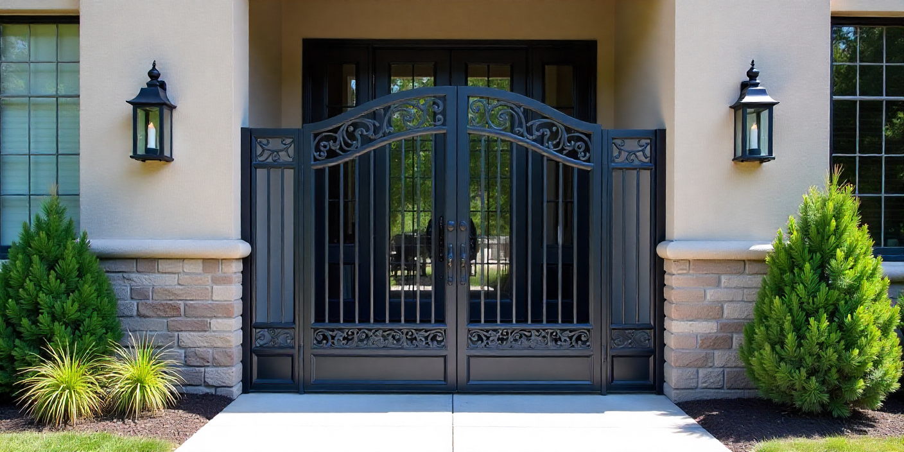
Secure, Durable, Functional
Kitchen , Hospitality Equipment
Food-grade fabrication for commercial kitchens
Metal Gates, Grills, and Covers
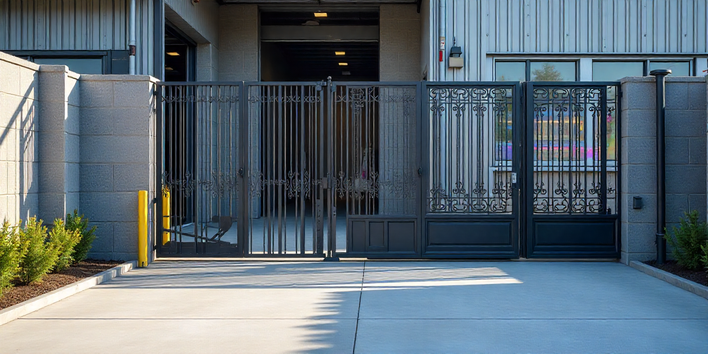
In industrial, commercial, and residential spaces
-
Stainless steel handrails and railings offer a perfect blend of strength, safety, and contemporary design.
Crafted to withstand daily use and harsh environments, they remain rust-free and low-maintenance. Their sleek finish complements commercial,
industrial, and residential spaces alike.
-
Metal gates, grills, and covers are custom-fabricated to provide robust security and stylish design.
Built from high-quality steel or iron, they ensure long-lasting protection for entrances, windows, and utility areas.
Each piece can be tailored to match architectural aesthetics and functional needs.
-
Kitchen & hospitality equipment is manufactured from hygienic, food-grade stainless steel for safety and durability.
These solutions support busy commercial kitchens with sturdy worktops, storage, and specialized fittings. Precision design helps streamline
food preparation and service operations efficiently.
Custom Fabrication Solutions
Tailored fabrication services designed to meet unique customer
specifications, combining creativity, precision, and advanced
technology.
Cutting, Bending, and Welding
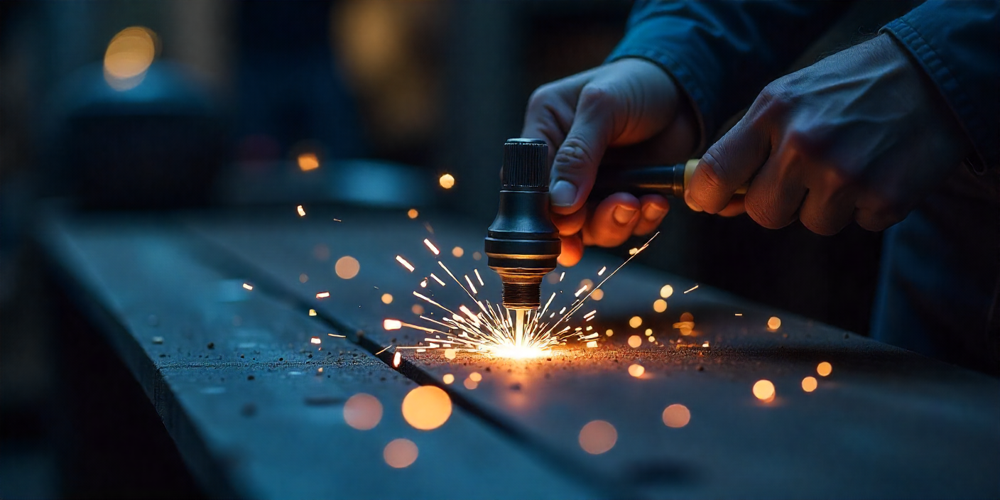
Precision fabrication of metal parts to exact specifications.
Galvanizing, Powder Coating, Finishing
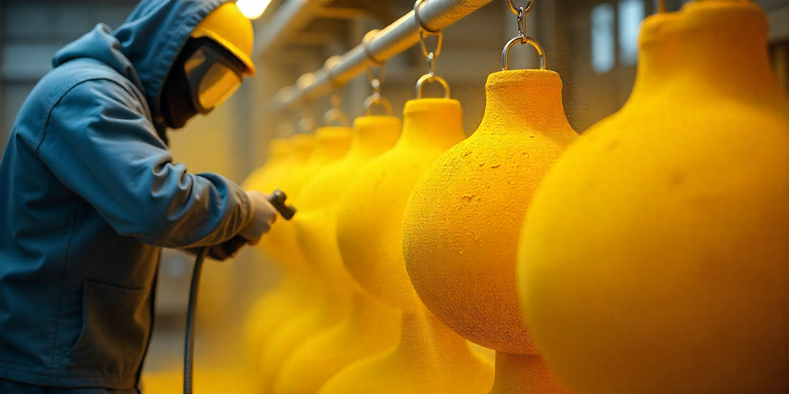
Protective and decorative finishes for durability and aesthetics.
On-site Installation & Project Support
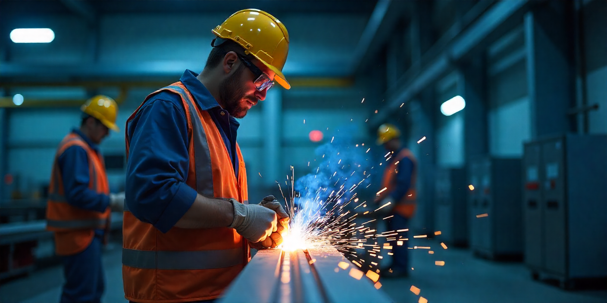
Professional assembly and technical assistance at your location.
Design Drawings and Specifications
Tailor-made fabrication to match your unique project needs.
-
Precision cutting, bending, and welding services transform raw metal into accurate, ready-to-install components. Using advanced machinery and skilled technicians, we handle complex shapes and large-scale production.
This ensures strength, clean finishes, and exact alignment with client specifications. Our process supports a wide range of industrial and architectural applications.
-
Galvanizing, Powder Coating, and Finishing Protective finishing services like galvanizing and powder coating extend the life of metal products. These processes add resistance to corrosion,
weather, and daily wear while improving appearance.
Finishes can be customized in various colors and textures. The result is durable, low-maintenance, and visually appealing metal work.
-
Custom Metal Works based on Design Drawings and Specifications-
Tailored metal fabrication services bring client designs and technical drawings to life. Each piece is produced to precise measurements
and quality standards. Flexible production capabilities handle unique,
small-batch, or large-scale custom projects. This approach ensures that every project meets exact functional and aesthetic goals.
Gates
Custom-designed gates for residential, industrial, and
commercial applications, crafted to blend durability,
security, and design aesthetics.
Gates
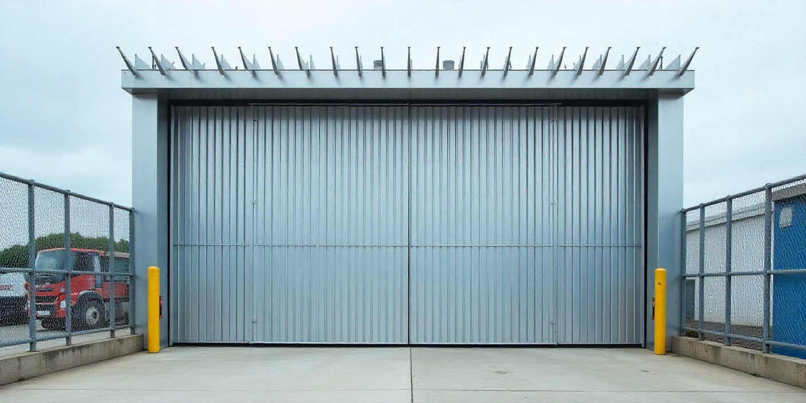
Custom-designed gates for residential, industrial, and commercial use
Custom-Gates
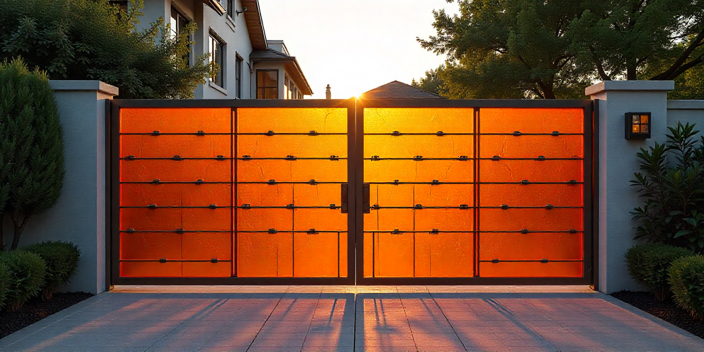
For residential, industrial, and commercial use
-
We fabricate custom gates tailored to the unique requirements of homes, factories, and commercial properties.
Built from high-quality steel or stainless steel, they ensure security and durability. Designs range from simple
functional barriers to decorative, modern styles. Each gate is crafted to blend seamlessly with the surrounding architecture.
Stainless Steel Kitchen Fabrication
Including work tables, sinks, cookers, hoods, and shelving,
all designed to meet the highest hygiene and functionality
standards.
Stainless Steel Kitchen Fabrication
Including work tables, sinks, cookers, hoods, and shelving
Stainless Steel Kitchen Fabrication
Protective and decorative finishes for durability and aesthetics.
-
We manufacture a complete range of stainless steel kitchen equipment designed for efficiency and hygiene.
Products include sturdy work tables, seamless sinks, powerful cookers, exhaust hoods, and space-saving
shelving. Made from food-grade stainless steel, these solutions resist corrosion and are easy to clean. They are ideal for restaurants, hotels, and catering facilities.
Industrial Kitchen Fabrication
Hygienic and corrosion-resistant solutions for large-scale
commercial kitchens, ensuring efficiency and compliance with
health standards.
Industrial Kitchen Fabrication
Hygienic and corrosion-resistant solutions for commercial kitchens
Commercial kitchens
Using premium stainless steel
-
Our industrial kitchen fabrication focuses on robust equipment built for demanding commercial use.
Using premium stainless steel, each piece is designed to withstand daily heavy-duty operations.
Smooth surfaces and precision welds make cleaning simple and meet strict hygiene standards.
These solutions help keep professional kitchens efficient, organized, and safe.
Stainless Steel Handrails
Safe and aesthetic handrail solutions suitable for industrial,
commercial, and residential environments.
Stainless Steel Handrails
Safe and aesthetic solutions for all environments
Stainless Steel Handrails
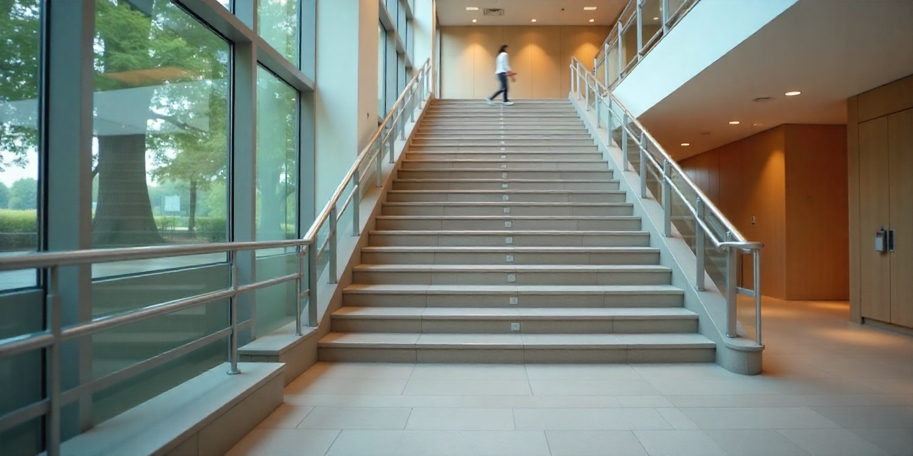
Safe and aesthetic solutions for all environments
-
Stainless steel handrailsprovide reliable support while adding modern style to buildings. Crafted to meet safety standards, they are suitable for staircases, balconies, and ramps.
Corrosion-resistant materials ensure long-term durability indoors and outdoors. Their sleek finish complements both contemporary and classic architectural designs.
Duct Fabrication
Fabrication of ventilation and exhaust ducts tailored to the
exact needs of each project for optimal airflow and
durability.
Duct Fabrication
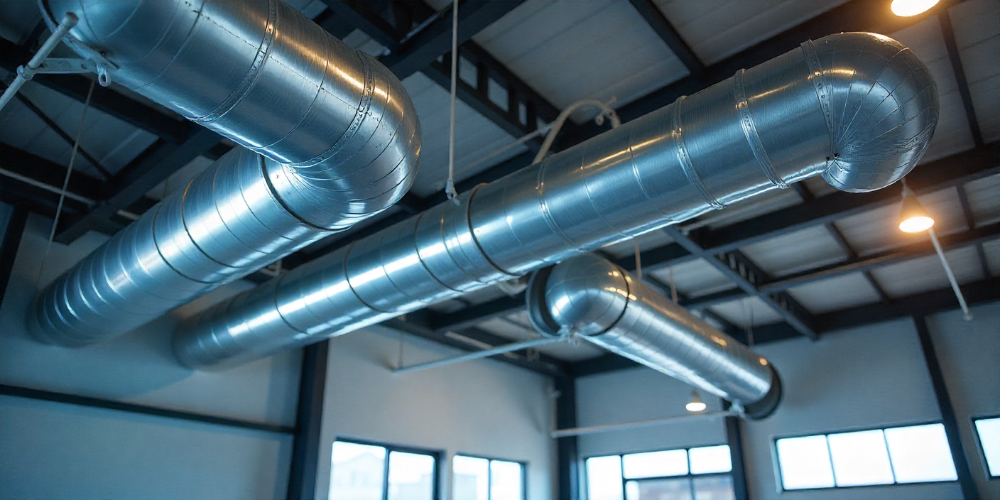
Ventilation and exhaust ducts tailored to project needs
Duct Fabrication
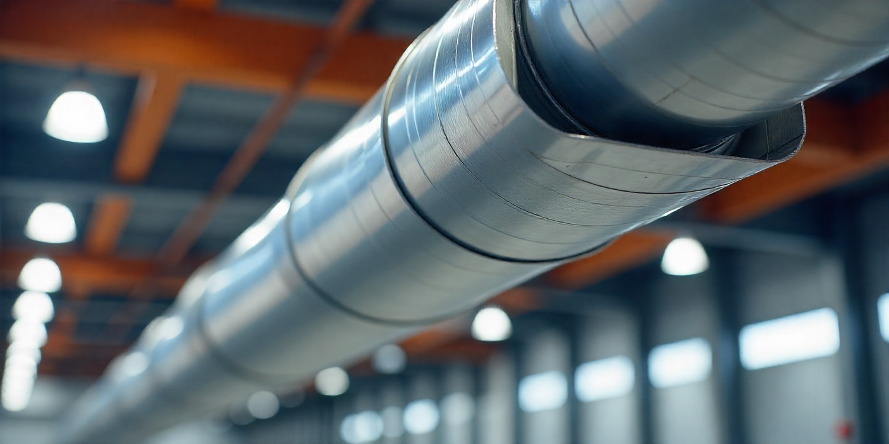
Ventilation and exhaust ducts tailored to project needs
-
We design and fabricate ventilation and exhaust ducts to match exact project specifications.
Each duct is produced from durable, corrosion-resistant materials to ensure long service life. Precision forming
techniques deliver smooth airflow and reliable performance. These solutions support clean air circulation in industrial, commercial, and residential buildings.
Lift Structures
Robust support frames and steel structures specifically
designed for elevators and lift installations.
Lift Structures
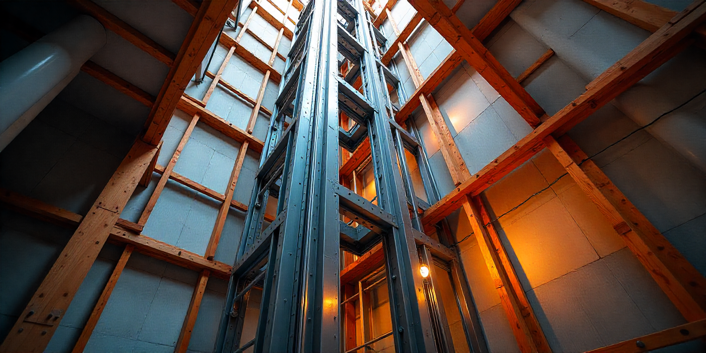
Support frames and steel structures for elevators
Lift Structures
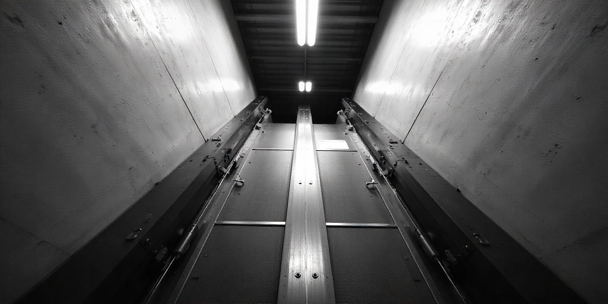
Support frames and steel structures for elevators
-
Our lift structures are engineered to safely house and support elevator systems. Made from strong, certified steel, they provide the stability
required for vertical transport. Designs are customized to fit shaft dimensions and building layouts. This ensures smooth installation and dependable operation.
Steel Ramps
Access ramps for warehouses, factories, and loading bays,
engineered for safety, strength, and functionality.
Steel Ramps
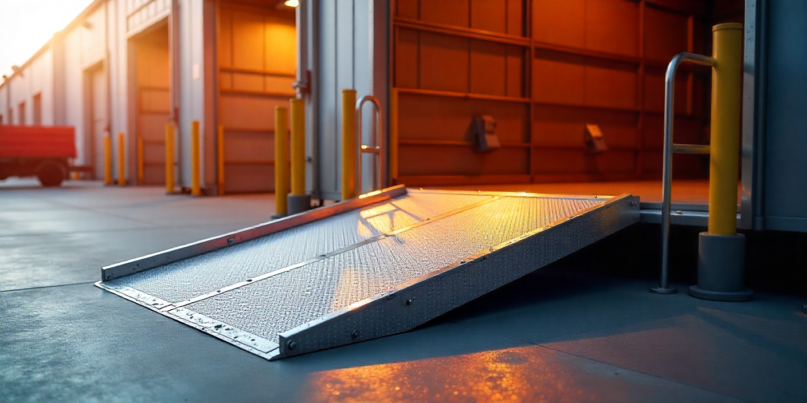
Access ramps for warehouses, factories, and loading bays
Steel Ramps
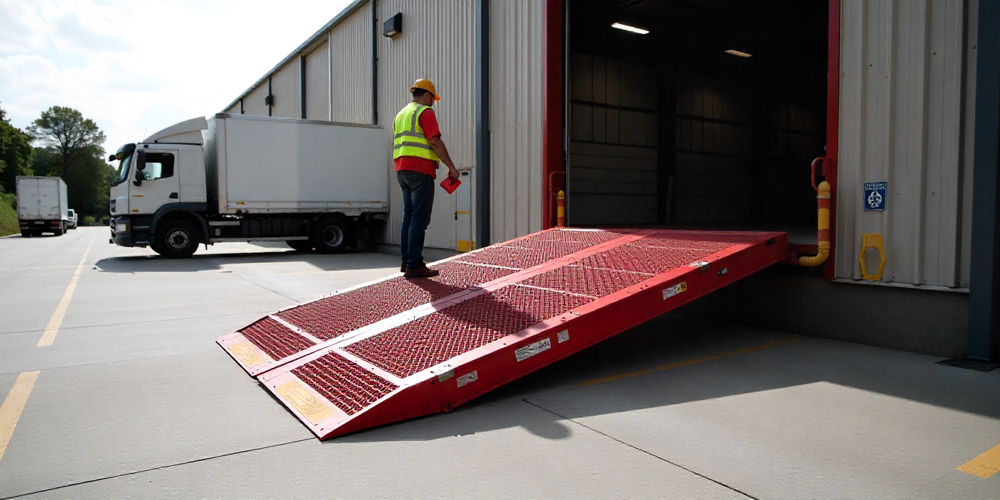
Access ramps for warehouses, factories, and loading bays
-
We fabricate durable steel ramps that improve accessibility and workflow efficiency. Designed for warehouses, factories, and logistic areas, they withstand heavy
loads and frequent use. Anti-slip surfaces and precise slope calculations enhance safety. Custom sizing ensures seamless integration into existing spaces.